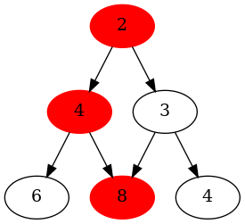

I wanted to write up two tools that I used recently to solve a code golf problem on project euler. The first tool is a library called networkx and the second is a tool called graphviz.
They are both advanced tools for solving a wide range of problems. With a little bit of elbow grease you can get a lot done with them. I'm going to start with describing the problem I was trying to solve.
Suppose you have a lattice like this:

The path highlighted in red shows the longest path through the lattice, if you're considering the sum of each of the node values. The rules are simple in this example. Whichever node you are standing on, you can only move one node down, either to your left or right.
It turns out that this is called a graph. Specifically we can call it a directed, acyclic graph (DAG). Pardon my ignorance computer scientists. I'll just leave the wiki here because it gets complicated quickly and the point of my post is not to cover the details.
So how do you find this maximum path through the lattice? Well I'm also not going to write out the details
of that in this post, but networkx provides a wide-range of algorithms that you can execute on graphs. Of
particular interest for this problem is dag_longest_path_length but there is a whole set of algorithms for DAGs here.
The hard part of using a library like networkx is figuring out what your graph is (see edge_info below). Once you've got that you can build the graph using the APIs:
D = nx.DiGraph()
D.add_weighted_edges_from(edge_info)
print(dag.dag_longest_path_length(D))
Well that's about all I have for networkx at the moment. But now I want to share a bit about graphviz, which
in a nutshell is a command line tool for generating visualizations of graphs. For my purposes, it suffices to say
that it reads in text that specifies your graph (a DSL)
and outputs an image file.
Here's the command I used to generate the graph in the image above:
$ python3 y.py | dot -o graph.png -Tpng
I am piping the output of my script to the graphviz command called dot, which in turn generates the image.
Here's the raw output of the python script:
digraph G {
1 -> 2;
1 -> 3;
2 -> 4;
2 -> 5;
3 -> 5;
3 -> 6;
1 [label=2];
2 [label=4];
3 [label=3];
4 [label=6];
5 [label=8];
6 [label=4];
1 [color=red,style=filled];
2 [color=red,style=filled];
5 [color=red,style=filled];
}
The first six lines inside the digraph specify the nodes and edges of the graph. The next six lines just specify that I want to show value attributed to each node in my graph. The last three lines are what highlight the maximal path through the lattice in red.
I might write more about the inner workings of the longest path algorithm, if so inclined/inspired. That's all for now.